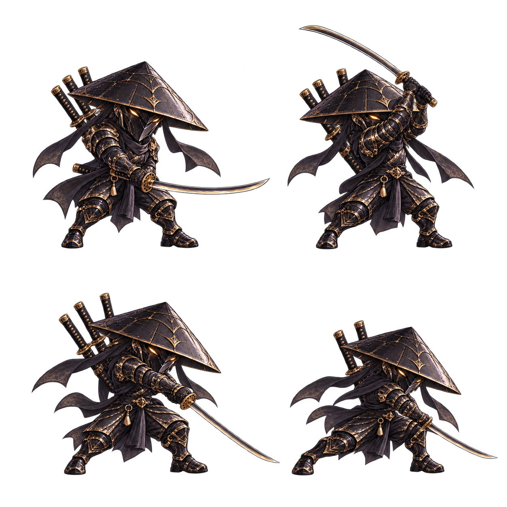
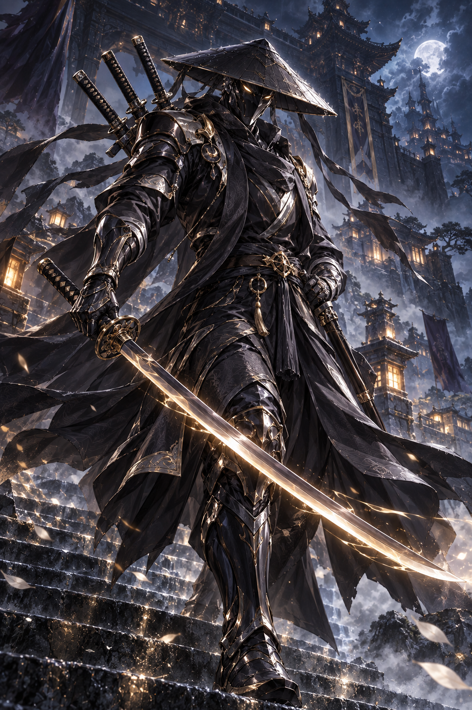
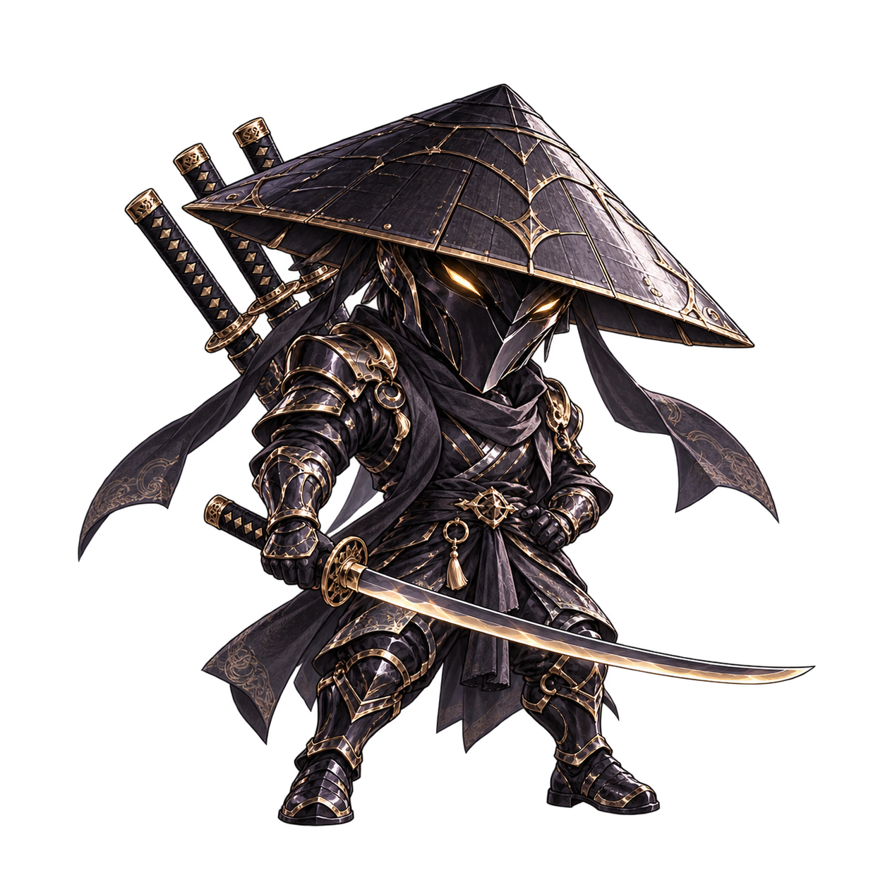
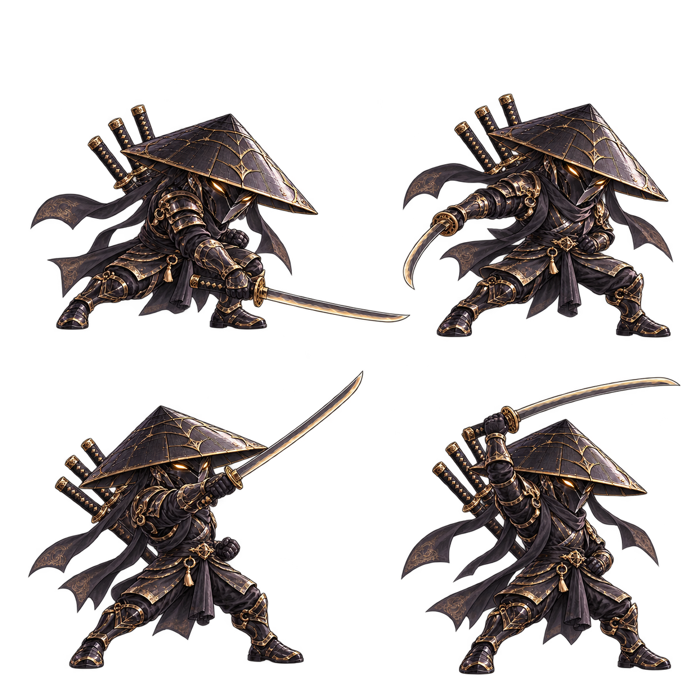
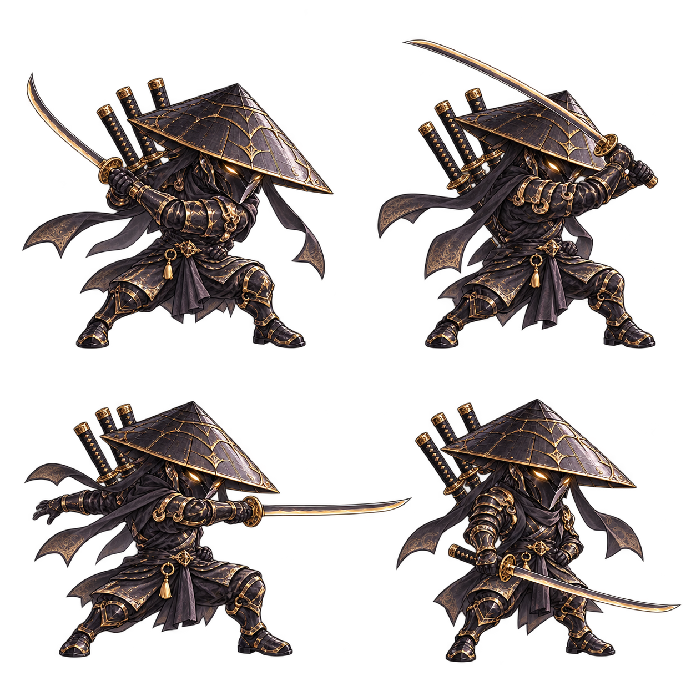
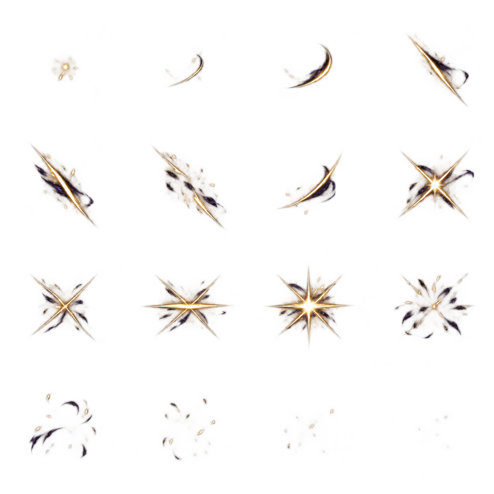

I / DESCENDING
내려베기
검을 들어 중심을 싣고,
금빛 날로 사선을 긋습니다.


OBSIDIAN · SILVER · GOLD
SS 전열 검객
고요를 가르는
세 번의 검광.
삿갓 아래 빛나는 금빛 눈.
흑철 갑주와 네 자루의 검,
어둠을 베어내는 삼연참.

BATTLE SILHOUETTE
큰 삿갓과 가면, 압축된 갑주 실루엣.
팔과 검, 몸의 자세가 변하는 연속 동작으로
내려베기에서 마지막 횡베기까지 이어집니다.
SIGNATURE / TRIPLE SEVER
내려베기 → 올려베기 → 횡베기
검광이 겹친 자리에 남는 금빛 파열.
전투 리소스를 불러오는 중입니다.
THE THREE CUTS
I / DESCENDING
검을 들어 중심을 싣고,
금빛 날로 사선을 긋습니다.

II / RISING
낮춘 자세에서 몸을 틀어
첫 검흔을 거슬러 올려 벱니다.

III / FINISHING
마지막 일섬이 가로질러,
겹친 검흔을 파열시킵니다.

